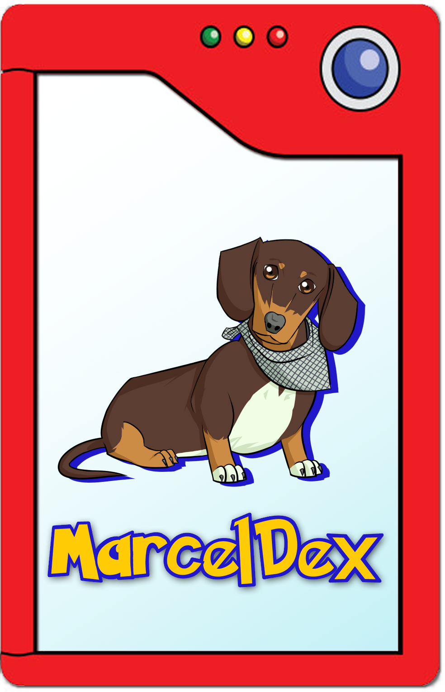
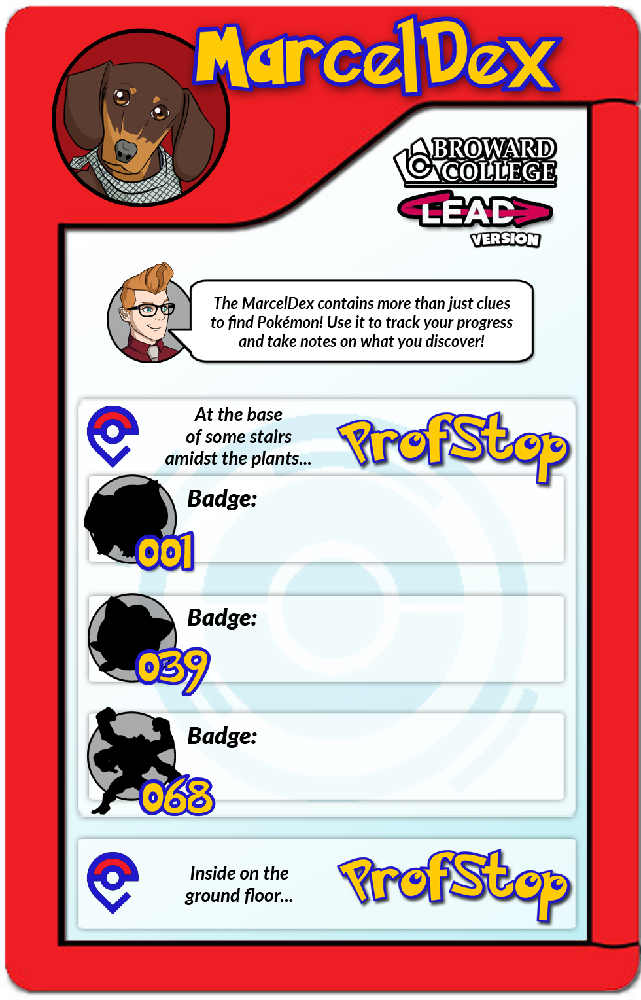
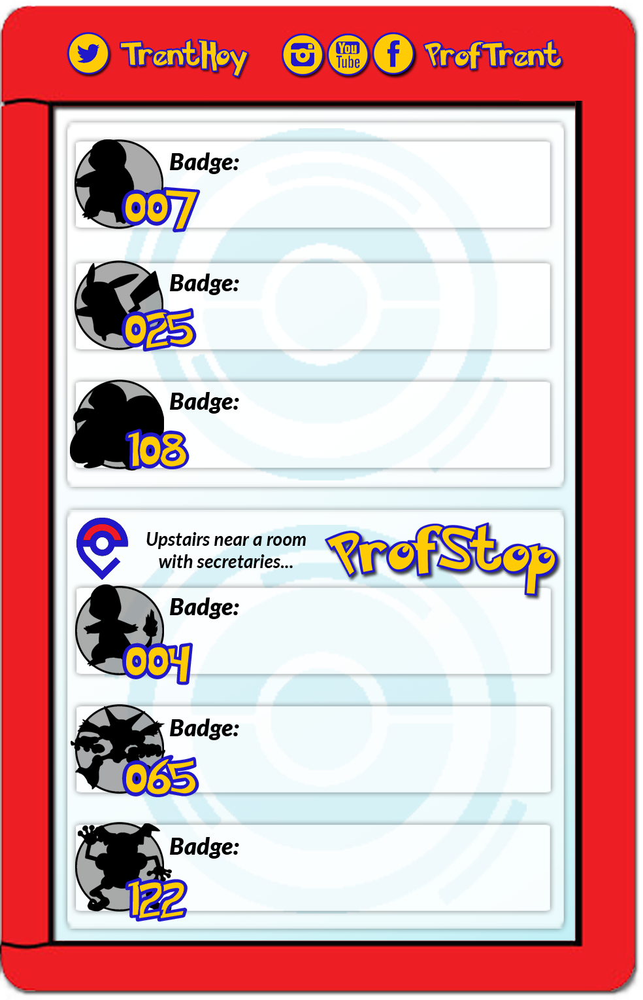
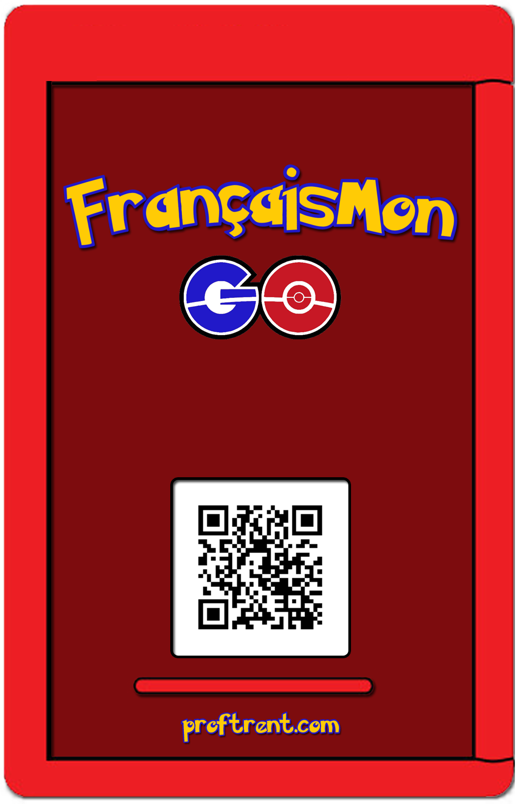

Prof Trent supplied everything needed to rescue the kidnapped Pokémon!
|
MarcelDexThe physical MarcelDex contains clues to the whereabouts of hidden ProfStops. There's also space for note taking! |
    |
 |
PokéScannerThe virtual reality technology of the PokéScanner has two main uses. It can scan the wearer's mind and assign them to a team based on personality traits. It can also help newbie trainers see into the Pokémon world and spot what would otherwise be invisible! |